China Employee Termination 2026: Pulse Failure-Cost Map for Foreign Employers
Key takeaways
- In China terminations, not all process failures are equal; some failures create disproportionately high legal and payroll cost.
- A failure-cost map helps foreign employers prioritize prevention and remediation where business impact is highest.
- The highest-cost failure clusters are usually route mismatch, unresolved evidence contradictions, and payout/tax uncertainty before communication.
- Teams should run case controls in cost-priority order, not documentation-volume order.
- This brief leads with practical context for non-local readers; legal detail is moved to a secondary appendix.
What changed and why this matters now
Many multinational teams already track compliance steps, yet they still over-invest in lower-impact tasks while under-investing in failure points that create expensive escalation. In practice, cost comes less from writing fewer documents and more from failing to stop high-impact errors early.
This run rotates to a failure-cost map format (distinct from prior threshold, queue, lane, and mode structures). It focuses on one executive question: if this case fails, where will it fail most expensively, and what control should be funded first?
Plain-language legal context first
China employer-initiated termination generally requires lawful route selection under statutory framework and fact-consistent execution across HR, legal, payroll, and communication. For foreign clients, the key point is that legal validity is fragile if process execution is inconsistent. A case can look compliant on paper and still become costly if critical execution breaks remain open.
Because local implementation can vary by city, failure likelihood and impact should be assessed with local context in mind.
Pulse failure-cost map: where losses usually concentrate
Cost Zone 1 — Route-fit failure (highest potential cost)
When the selected route is not clearly supported by case facts, downstream work becomes unstable.
Typical cost effects: legal rework, delayed decisions, elevated dispute exposure, management time drain.
Primary controls: route memo with fact mapping, fallback route, local-fit validation.
Cost Zone 2 — Evidence-integrity failure
When chronology and records conflict across systems, defensibility weakens quickly.
Typical cost effects: reconstruction sprints, delayed closure, increased settlement pressure.
Primary controls: contradiction log, source ownership, version-controlled evidence ledger.
Cost Zone 3 — Payroll/tax closure failure
When severance, IIT, and payment path are not finalized before notice, employee trust and legal posture can deteriorate at once.
Typical cost effects: payout disputes, urgent recalculation cycles, reputational friction.
Primary controls: pre-communication payroll lock, co-signed tax assumptions, proof-of-payment plan.
Cost Zone 4 — Communication-control failure
When messaging drifts from validated facts and approved language, narrative risk rises.
Typical cost effects: inconsistent statements, escalation complexity, extended dispute timelines.
Primary controls: approved script pack, spokesperson assignment, escalation script discipline.
Cost Zone 5 — Closure-defensibility failure
When archives are incomplete or retrieval fails, post-event response costs grow.
Typical cost effects: slower response under challenge, higher legal workload, weak case reconstruction.
Primary controls: indexed archive, retrieval testing, closure memo with decision chronology.
How foreign employers should use this map
The map is not just a risk label tool; it is a resource allocation guide. Teams should allocate legal and operational effort by expected cost impact. In most cases, Cost Zones 1-3 deserve priority staffing and hard release gates before communication.
For leadership, map reporting is concise: active cost zones, current severity, owner, mitigation ETA, and hold status. This makes cross-border oversight faster without exposing unnecessary case detail.
Practical scenarios
Scenario A: high-quality paperwork, wrong cost priorities
A team builds comprehensive documentation but delays route-fit challenge and payroll lock.
Outcome pattern: late disputes despite “complete file” appearance.
Map correction: prioritize Cost Zones 1 and 3 before presentation polish.
Scenario B: strong legal route, weak evidence coherence
Route appears defensible, but key timeline contradictions remain unresolved.
Outcome pattern: prolonged negotiation and weak confidence in final position.
Map correction: elevate Cost Zone 2 and block downstream progression.
Scenario C: fast communication, weak closure archive
Case communication is controlled, but archive retrieval fails later.
Outcome pattern: expensive response cycle during challenge.
Map correction: add mandatory Cost Zone 5 retrieval gate before close.
Daily operations SOP (cost-priority execution)
Step 1 — Score cost zones at intake
- Assign severity by zone (high/medium/low).
- Set owner and backup owner per zone.
Step 2 — Fund high-cost zones first
- Clear Zones 1-3 before communication prep.
- Track mitigation evidence and ETA.
Step 3 — Apply hold rules by cost severity
- High-severity unresolved zone blocks progression.
- Escalate ownership when deadlines slip.
Step 4 — Run controlled communication only after critical clears
- Confirm route/evidence/payroll stability before notice.
- Log messaging approvals and execution trail.
Step 5 — Validate closure defensibility
- Run archive retrieval test and closure review.
- Store cost-zone history for continuous improvement.
Required document checklist
- Route memo + fallback route + local-fit note
- Contract and amendment records
- Chronology ledger + contradiction closure notes
- Severance/IIT/social worksheet
- Payment approvals + proof plan
- Script package + spokesperson brief
- Closure memo + archive index + retrieval test
- Cost-zone log (severity, owner, action, timestamp)
Exception handling playbook
- Zone 1 spike: immediate legal review and route redesign.
- Zone 2 unresolved conflict: launch evidence reconciliation sprint with hard deadline.
- Zone 3 unresolved near notice: enforce no-communication hold.
- Zone 4 script breach: pause outreach and re-authorize channels.
- Zone 5 retrieval failure: do not close case; remediate archive controls.
System implementation notes
Implement each cost zone as a structured field in case workflow tools with severity, owner, and evidence links. Add automation to block communication tasks when high-severity Zone 1-3 issues remain open.
Track monthly metrics: zone activation frequency, average mitigation time, and post-case escalation correlation. This converts qualitative compliance concerns into measurable operational performance.
Common mistakes and prevention
- Mistake: equal effort across all controls regardless of impact.
Prevention: allocate effort by failure-cost concentration.
- Mistake: assuming document volume equals defensibility.
Prevention: prioritize contradiction closure and payout certainty.
- Mistake: late discovery of high-cost failures.
Prevention: score zones at intake and every major transition.
- Mistake: no feedback loop on repeated high-cost failures.
Prevention: monthly cost-zone trend review and SOP adjustment.
What to do now
- Deploy a five-zone failure-cost map for all active China termination cases.
- Set hard progression holds for unresolved high-severity Zones 1-3.
- Require pre-communication payroll/tax lock evidence.
- Add weekly cost-zone dashboard reporting.
- Use trend data to rebalance staffing and controls.
What to watch next
- Repeat high-severity Zone 3 events (payroll/tax bottlenecks).
- Zone 2 contradiction spikes during restructuring waves.
- Zone 5 closure failures indicating records-control gaps.
FAQ
1) Why use a failure-cost map instead of a generic risk matrix?
It ties controls directly to business impact and helps prioritize limited resources.
2) Which zone most often causes expensive escalation?
Usually Zone 3 when payout/tax is not finalized before communication.
3) Can we proceed with a high-severity issue still open?
Only with explicit documented risk acceptance; default should be hold.
4) Who should own cost-zone governance?
A cross-functional lead with named owners in legal, HR, payroll, and compliance.
5) How often should zone severity be updated?
At each major transition and after any material new fact.
6) Does this model slow case handling?
It usually improves net speed by preventing late-stage failure rework.
7) Is this legal advice?
No. It is an operational framework for better decision quality and control prioritization.
Legal depth appendix (secondary)
This brief is anchored in the PRC Labor Contract Law framework and supplemented by practitioner and payroll references used by multinational employers. Live cases remain fact-specific and locality-sensitive, so route and execution choices should be validated in context.
Termination payout and IIT handling should be checked against current local filing practice and advisor guidance. English-language summaries support internal alignment but should not replace localized case review in material-risk situations.
Soft CTA
If your team needs a compliance-first operating model for China terminations, China-Payroll.com can help implement failure-cost mapping, payroll lock controls, and defensibility workflows for foreign employers.
Disclaimer
This content is informational only and does not constitute legal, tax, or employment advice.
Sources
- National People’s Congress of China, Labor Contract Law of the PRC (English), accessed 2026-03-06: http://www.npc.gov.cn/zgrdw/englishnpc/Law/2007-12/13/content_1384064.htm
- ICLG, Employment & Labour Laws and Regulations: China, accessed 2026-03-06: https://iclg.com/practice-areas/employment-and-labour-laws-and-regulations/china
- Littler, Key Recent Developments in China’s Employment Law, accessed 2026-03-06: https://www.littler.com/news-analysis/asap/key-recent-developments-chinas-employment-law-china-us-comparative-perspective
- PwC Tax Summaries, China Individual — Taxes on Personal Income, accessed 2026-03-06: https://taxsummaries.pwc.com/peoples-republic-of-china/individual/taxes-on-personal-income
- China Briefing, China Human Resources and Payroll Guide, accessed 2026-03-06: https://www.china-briefing.com/doing-business-guide/china/human-resources-and-payroll
Need local employment support in China?
If you need a compliance-first partner for hiring, payroll, and risk controls in China, China-Payroll.com can help evaluate the right setup.
Image Prompt Pack
Create a 16:9 hero image for article title: 'China Employee Termination 2026: Pulse Failure-Cost Map for Foreign Employers'. Scene: global operations team evaluating workforce model options for China market entry. Include motifs: decision matrix, org chart, le…